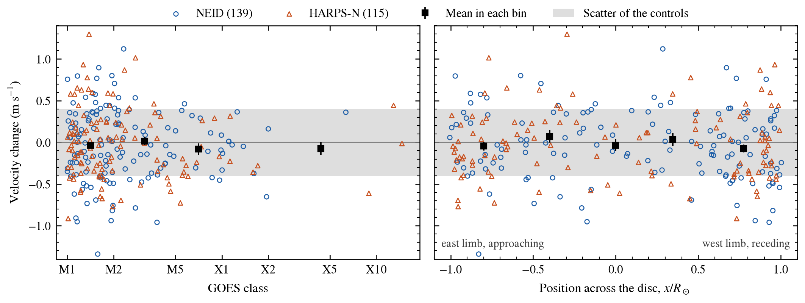

Results¶
Status: November 2026. The velocity is measured with two instruments, NEID and HARPS-N. The spectra are those of NEID: 23 flares and nine flare-free control windows.
The velocity of the Sun does not change during flares¶
Two instruments that watched different flares give the same answer.

Change of the velocity during the flare, minus that of its controls, in m/s (in brackets, the number of flares):
| NEID | HARPS-N | Both | 95 % limit | |
|---|---|---|---|---|
| Mean change, all M and X flares | −0.035 ± 0.035 (139) | −0.021 ± 0.039 (115) | −0.029 ± 0.026 (254) | 0.07 |
| Mean change, M class | −0.032 ± 0.039 (128) | −0.015 ± 0.042 (108) | −0.025 ± 0.028 (236) | 0.07 |
| Mean change, X class | −0.060 ± 0.088 (11) | −0.104 ± 0.127 (7) | −0.074 ± 0.072 (18) | 0.19 |
| Shift of an X1 flare, S | −0.010 ± 0.061 | −0.005 ± 0.040 | −0.006 ± 0.033 | 0.06 |
| Rotation term, R | −0.106 ± 0.082 | +0.022 ± 0.043 | −0.006 ± 0.038 | 0.07 |
Together the mean change is below 0.07 m/s, less than the 0.09 m/s that the Earth imprints on the Sun. The 254 measurements are of 253 different flares: one was observed by both instruments. The data give no evidence that the flares used differ from the rest of the M and X flares. Their classes and their positions on the disc are distributed like those of the full list, with Kolmogorov-Smirnov probabilities between 0.04 and 0.96 in the eight tests (class, two coordinates on the disc and distance from its centre, for each instrument). The lowest is not unusual for the smallest of eight tests. With as few flares as in the X-class row, the error is itself uncertain by a quarter.
Three further checks give the same answer:
- Larger flares do not shift the velocity more. For the 18 flares of class X no change is found either, but the limit, 0.19 m/s, is twice the signal of the Earth.
- There are no shifts of opposite sign that cancel in the mean. The changes of the flares scatter as much as those of the controls: 0.40 m/s for both with NEID, 0.40 and 0.41 with HARPS-N.
- There is no rotation signature. The rotation term is below 0.07 m/s for an X1 flare at the limb, which means K · ΔF / F < 3.7 × 10⁻⁵ per X1 flare (see Method).

The result does not depend on the choices¶
With NEID, where the choices were made (HARPS-N was analysed afterwards, once, with them). All in m/s:
| Variant | Flares | Mean change | Shift of an X1 flare | Rotation term |
|---|---|---|---|---|
| Default | 139 | −0.035 ± 0.035 | −0.010 ± 0.061 | −0.106 ± 0.082 |
| Daily trend: polynomial of degree 1 | 137 | −0.022 ± 0.036 | −0.015 ± 0.060 | −0.045 ± 0.080 |
| Daily trend: polynomial of degree 3 | 139 | −0.001 ± 0.033 | +0.016 ± 0.049 | −0.079 ± 0.083 |
| "During" window: 3 min either side of the steepest X-ray rise | 120 | −0.009 ± 0.042 | −0.019 ± 0.061 | −0.108 ± 0.135 |
| "During" window: first 10 min from the start | 134 | −0.040 ± 0.035 | +0.006 ± 0.045 | −0.004 ± 0.080 |
| "During" window: 5 min either side of the X-ray peak | 126 | −0.021 ± 0.042 | −0.111 ± 0.085 | −0.134 ± 0.154 |
| Background: straight line fitted on both sides of the flare | 93 | −0.008 ± 0.040 | −0.032 ± 0.070 | −0.002 ± 0.113 |
| Errors: resampling 81 active regions instead of 111 days | 139 | −0.035 ± 0.035 | −0.010 ± 0.061 | −0.106 ± 0.082 |
Flares that follow one another do not change it either. Without the 36 flares that start less than 45 minutes after the peak of another M or X flare, the mean change of the other 218, with both instruments, is −0.033 ± 0.029 m/s.
A signal would have been seen¶
A shift added to the NEID velocities, and the shift measured back:
| Added | Measured | Probability of detecting it at 95 % |
|---|---|---|
| 5 cm/s | 4.9 cm/s | 40 % |
| 10 cm/s | 9.8 cm/s | 88 % |
| 20 cm/s | 19.5 cm/s | 100 % |
| 50 cm/s | 48.8 cm/s | 100 % |
With HARPS-N the same test measures back 98 %. The probability of detection is that of measuring more than 1.645 times the error, the one-sided threshold of 95 % confidence, when the shift is the one measured back. With the two instruments together, a shift of 10 cm/s common to all flares would have been detected with a probability of 98 %.
The same spectra do see the flares¶
A result of "nothing happens" needs the proof that the instrument was looking. The spectra give it: the chromospheric lines brighten as the X-ray flux rises, peak a few minutes after the X-ray peak and are still bright 40 minutes later. In the control windows they stay flat, and in those same spectra the velocity does not move.

Mean response of the flares on the disc (within 0.9 solar radii of the centre), from 8 minutes before the X-ray peak to 10 minutes after it:
| X class (8 flares) | M5 to M9 (6 flares) | Controls (9 windows) | |
|---|---|---|---|
| Ca II H and K (parts per thousand) | +5.3 ± 1.7 | +2.2 ± 0.4 | 0.0 ± 0.2 |
| H alpha core (parts per thousand) | +3.3 ± 1.1 | +2.0 ± 0.2 | −0.1 ± 0.2 |
| Velocity (m/s) | −0.11 ± 0.21 | −0.10 ± 0.11 | +0.07 ± 0.27 |
- All 14 flares on the disc brighten in both lines.
- Smaller flares respond less: those between M5 and M9, about half as much as those of class X.
- Near the limb the response is weaker: +1.7 ± 0.9 in Ca II H and K for four X-class flares, +1.4 ± 0.5 for five between M5 and M9.
- Weaker flares were not fetched. Between M2 and M5 the response of one flare would be below the noise, and these 14 already show that the spectra see the flares.
The table flare by flare is results/spectral_response.csv. One flare in detail, the X6.3 of
22 February 2024, whose peak came just after the last solar spectrum of that day:

What was to be expected¶
- How bright is a flare in visible light? At the peak of an average M2 flare the Sun brightens by 7 parts per million, and in the X17 flare of 28 October 2003 it brightened by 264 (Kretzschmar 2011). Those classes are on the old GOES scale, which carried a factor 0.7; on the scale used here they give 11 to 23 parts per million for an X1 flare. The two agree within a factor of two although the flares differ by a factor of almost ninety in class: on average the visible brightening grows with the X-ray class, though not flare by flare.
- How much does that light move the velocity? At most 2 to 4 cm/s for an X1 flare at the limb (K = 1), and less elsewhere.
- How close do we get? The limit of the two instruments together is 1.6 to 3.5 times that. The absence of a rotation signal is what the physics predicts; it is now measured.
- And the lines of the flaring area itself? In resolved images they are shifted by up to 200 m/s (Saar et al. 2018). A ten-thousandth of the disc shifted by 100 m/s moves the velocity of the whole Sun by about 1 cm/s, so this effect depends on the area of the flare, which has not been estimated here. The limit on the mean change bounds it from the data.
The answer¶
Solar flares do not significantly contaminate the detection of Earth analogues by radial velocity, for two reasons:
- They move the velocity very little: less than 7 cm/s on average for M and X flares together. For class X alone no change is found either, but the limit is about 20 cm/s, twice the signal of the Earth.
- They take up little of the time. Between December 2020 and November 2026, six years that span the rise and the maximum of cycle 25, the Sun produced 358 flares of class M or X per year on average, 18 of them of class X. Counting each flare from its start to its end in the GOES list (19 minutes in the median), the Sun spent 1.6 % of the time in one of them (0.1 % for class X). In 2024, the most active year, there were 934 flares, 52 of them of class X, and the Sun spent 3.8 % of the time in one (0.3 % for class X).
This has been shown for the Sun, not for Sun-like stars in general: stars more active than the Sun, with larger and more frequent flares, are another matter.
How this compares with published work¶
- Velocity. Pietrow et al. (2024) followed two X-class flares of 6 September 2017 with HARPS-N. They could not claim a detection: they set an upper limit of 50 cm/s and asked for a statistical follow-up. Here the mean change of 253 flares seen by two instruments is below 7 cm/s. The larger of their two flares is in the HARPS-N sample: its change is −0.01 m/s, with a single-flare error of 0.41 m/s.
- Chromosphere. In the same two flares Ca II H and K rose by more than 1 %. Here Ca II H and K is also the most sensitive index, up to 1.7 %.
- Light of the whole disc. The H alpha studies with imaging spectrographs (Otsu et al. 2022, 2024; Ma et al. 2024) integrate a region around the flare and normalise by the disc. NEID records the response in the light of the whole disc, and the control windows give its noise floor.
Outside the paper¶
An excess before the X-class flares of NEID that HARPS-N does not see¶
In the ten minutes from 60 to 50 minutes before the X-ray peak, the X-class flares observed by NEID sit 0.43 ± 0.10 m/s above the trend of their day (19 flares with data at that time, 17 of them positive). It was noticed in the mean velocities, not predicted. It is absent in the M-class flares of NEID (0.00 ± 0.03 m/s) and in the controls, and HARPS-N does not show it: −0.12 ± 0.11 m/s for its ten X-class flares, which are other flares. The origin of the feature is unclear. If it were a general property of X-class flares, the HARPS-N sample should show it too; its absence there points to the instrument or to chance, although a solar origin cannot be excluded.
Flares do not raise the amplitude of the solar oscillations¶
| Quantity | Flares | Null samples | 95 % limit on the excess |
|---|---|---|---|
| ln(power after / before) | −0.068 | 0.001 ± 0.053 | 0.16 |
| The same, weighting high frequencies | −0.013 | −0.009 ± 0.060 | 0.10 |
With NEID, a mean increase above 8 % in amplitude is ruled out. This tests the proposal of Karoff and Kjeldsen (2008), with the limitation that the 83 s cadence reaches only 6 mHz.
What is left¶
- A third instrument, to see whether the excess before the X-class flares is a feature of NEID.